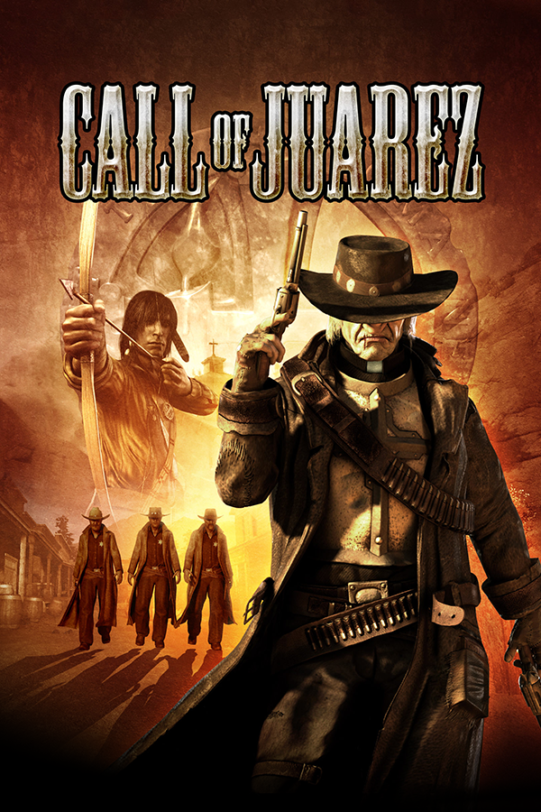

Call of Juarez
Call of Juarez
Detalhes
|  | |
| Tempo de jogo | Não Jogado |
| Última Atividade | Nunca |
| Adicionado | 15/07/2024 13:16:44 |
| Modificado | 10/03/2025 1:37:03 |
| Status de Conclusão | Not Played |
| Biblioteca | Gog |
| Fonte | GOG |
| Plataforma | PC (Windows) |
| Data de Lançamento | 05/09/2006 |
| Pontuação da Comunidade | 74 |
| Avaliação da crítica | 72 |
| Pontuação do Usuário | |
| Gênero | First-person shooter |
| Desenvolvedor | Techland |
| Editor | AU EU Microsoft Windows'Xbox 360 NA Ubisoft |
| Funções | Multiplayer Single Player |
| Links | Wikipedia |
| Tag | [EMT] Video Micro missing |
Descrição
Call of Juarez is a 2006 Western-themed first-person shooter for Windows and Xbox 360. Developed by Techland, the Windows version was published in Europe by Focus Home Interactive in September 2006, in Australia by Auran Development in October 2006, and in North America by Ubisoft in June 2007. The Xbox 360 version was ported by Techland and published worldwide by Ubisoft in June 2007. In March 2011, it was made available on Xbox Live, and in November 2018, it was released on GOG.com. It is the first game in the Call of Juarez series, which would go on to include three additional titles; Call of Juarez: Bound in Blood (a prequel to the first game), Call of Juarez: The Cartel (set in the modern-day), and Call of Juarez: Gunslinger (returns the series to the Western setting).
The game tells the story of Billy 'Candle', a young ranch hand and fortune-seeker, and Ray McCall, a former gunslinger turned preacher. After two years in Juarez unsuccessfully looking for the mysterious "Gold of Juarez", Billy returns to his hometown of Hope, Texas, near the Mexican border. However, when he arrives at his farm, he finds his mother and stepfather have been murdered, and "Call of Juarez" written on a barn in their blood. Mistakenly believing that Billy is the killer, Ray (his step-uncle) abandons his role as the town's preacher and sets out to avenge their deaths by killing Billy, as Billy himself tries to find out who actually committed the murders, and why.
Originally called Lawman, Call of Juarez was initially conceived as a reaction to World War II and science fiction games dominating the first-person shooter genre. The designers drew inspiration from a range of Western-themed films, TV shows, and literature, as well as some real-life stories and figures. The game was built using Techland's in-house game engine, the Chrome Engine. For the subsequent Xbox 360 release, numerous graphical improvements were made, and some gameplay elements were changed, reducing the amount of stealth in Billy's levels. The North American PC release version incorporated many of these graphical and gameplay changes and was one of the first PC games optimized for Windows Vista and DirectX 10. Techland also released a patch allowing for those who owned the original DirectX9 version of the game to upgrade to the DirectX10 version.
Call of Juarez received mixed reviews, with most critics praising Ray's levels and the general shooting mechanics, but finding Billy's levels significantly inferior, especially the platforming sections and the implementation of the whip. The enemy AI was also criticised. On the other hand, many critics were impressed with how the game recreated an authentic Western tone, and Marc Alaimo's voice acting as Ray was generally lauded. Although the game did not sell very well in North America, it fared better in Europe, with Techland citing it as "putting us on the map."